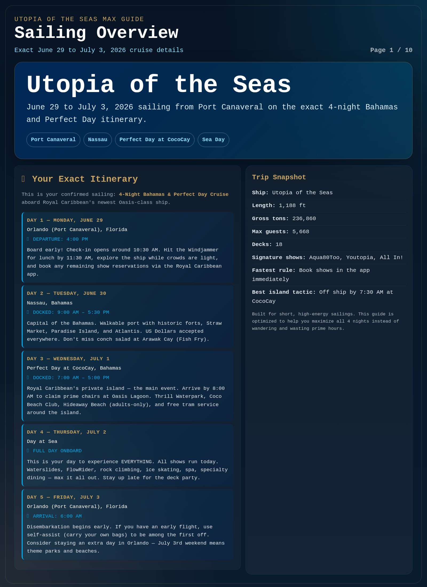
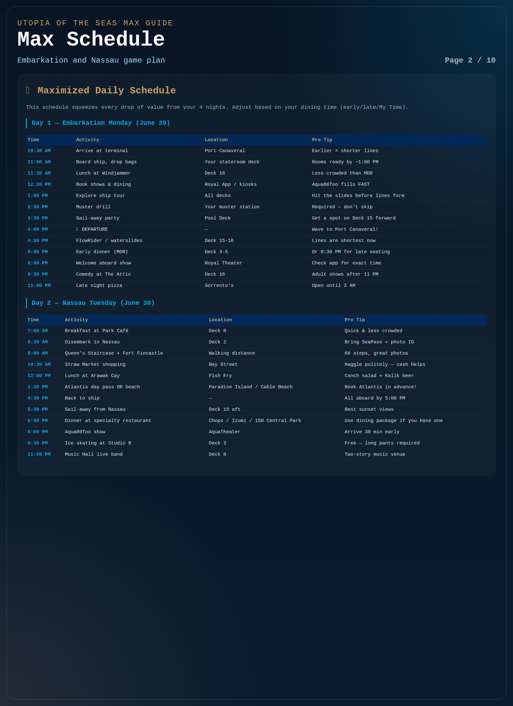
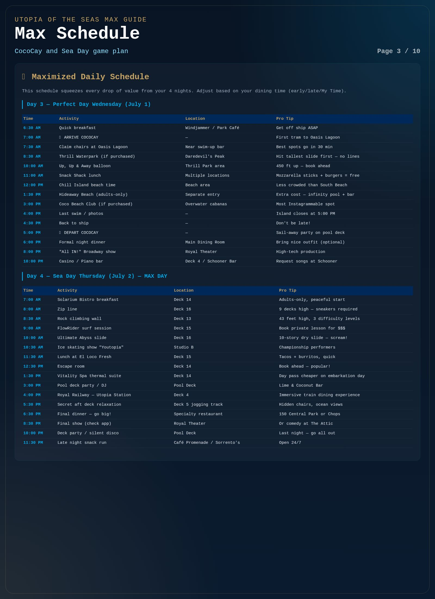
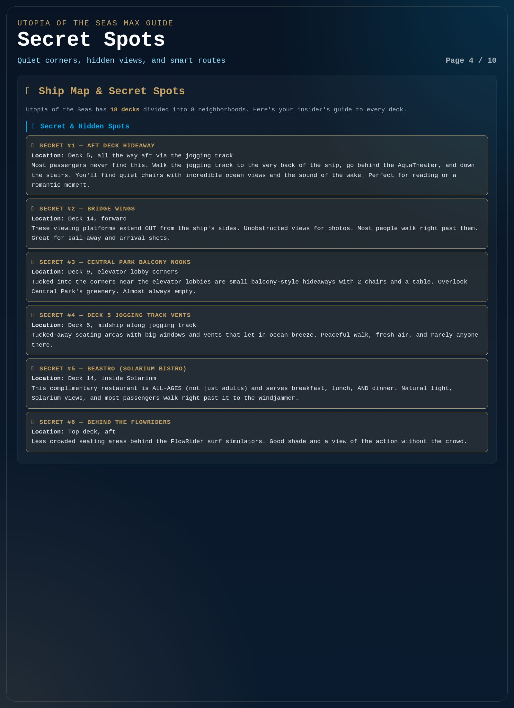
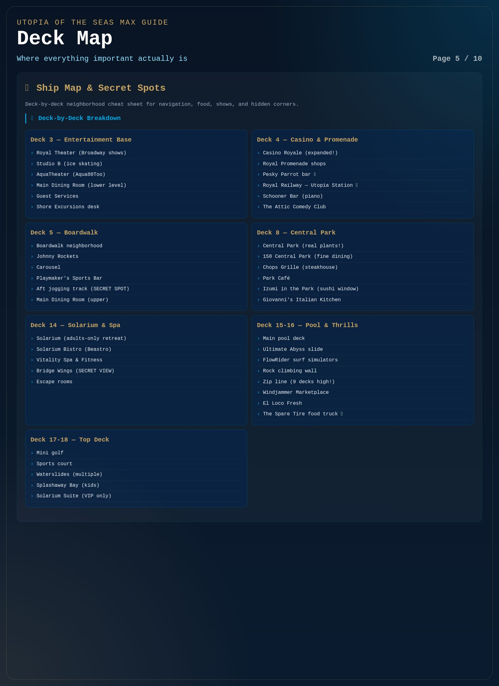
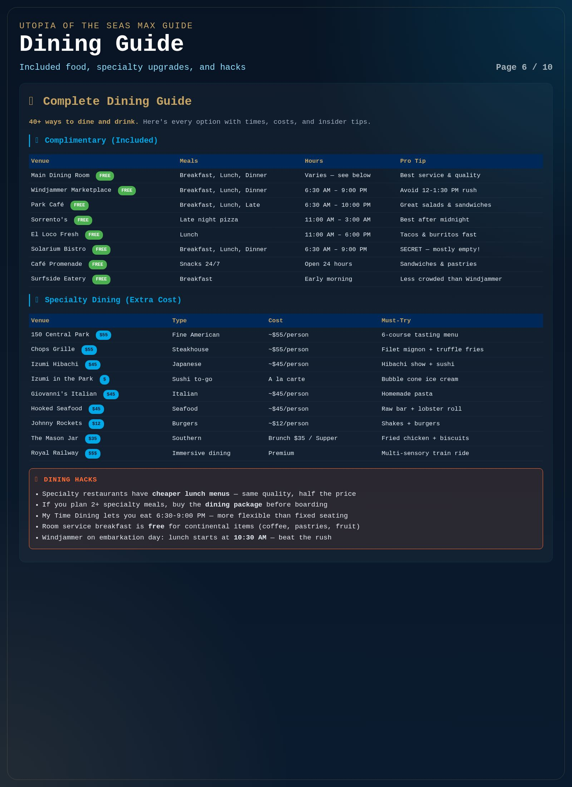
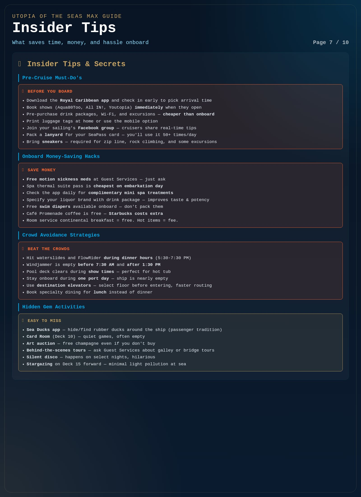
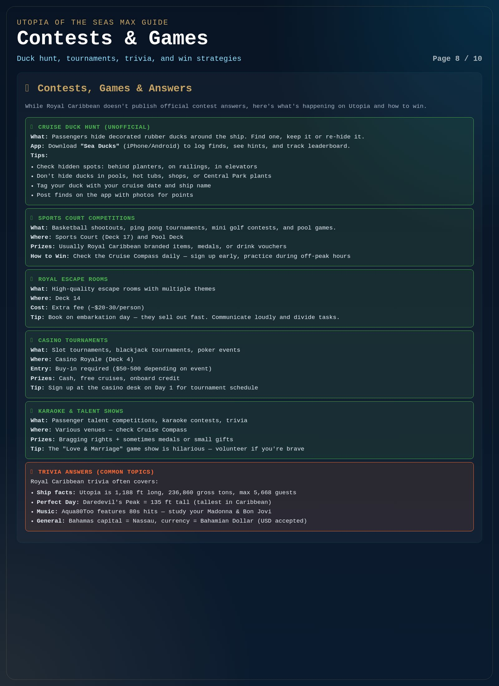
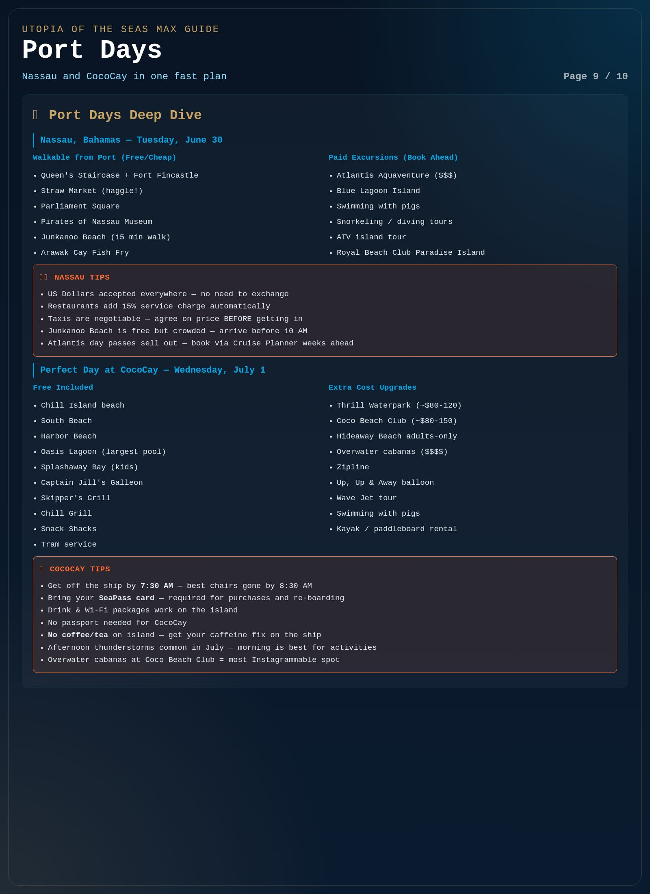
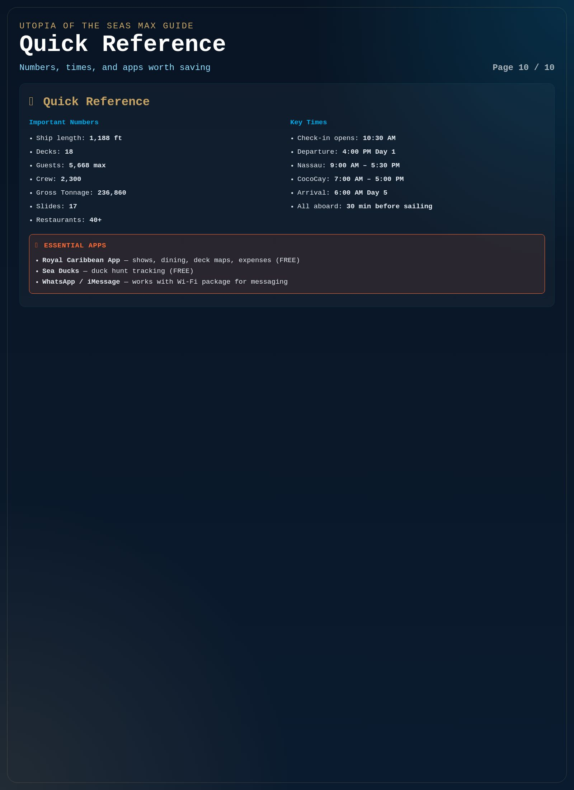

Restored original page 1 of 10

Restored original page 2 of 10

Restored original page 3 of 10

Restored original page 4 of 10

Restored original page 5 of 10

Restored original page 6 of 10

Restored original page 7 of 10

Restored original page 8 of 10

Restored original page 9 of 10

Restored original page 10 of 10
Bonus pages added to the original deck
2026 sailing updates
you actually need
The original 10-page guide is preserved above. These added pages layer in the extra current research that was not reflected strongly enough in the earlier build: the official route confirmation, the new Nassau beach-club reality, updated entertainment/game notes, and the planning details that matter most on a short Utopia run.
Exact sailing: June 29 to July 3, 2026
Royal Beach Club now open
Short sailing = high booking pressure
Official route lock
What is confirmed
Day 1
Port Canaveral departure at 4:00 PMBoarding windows are assigned; use embarkation afternoon for reservations, slides, and ship orientation.
Day 2
Nassau from 9:00 AM to 5:30 PMNow more meaningfully shaped by Royal Beach Club Paradise Island than older Nassau advice alone.
Day 3
Perfect Day at CocoCay from 7:00 AM to 5:00 PMStill the port most cruisers optimize first because chairs, waterpark time, and weather all reward an early start.
Day 4/5
Sea day, then return to Port CanaveralSea day is where the show and specialty-dining backlog gets settled if you did the ports right.
Nassau changed
Royal Beach Club matters now
- Three neighborhoods: Party Cove, Paradise Beach, and Chill Beach.
- Scale: 3 pools, 2 beaches, 10 bars, 3 dining spots, and roughly 30 cabanas.
- Included with pass: all-day dining, Wi-Fi, loungers, umbrellas, towels, lockers, showers, and boat transportation.
- Why it changes planning: Nassau is no longer just “walk around or Atlantis.” For many cruisers this becomes the premium port choice instead.
Best use: decide before you sail whether Nassau is a cheap walkable day or a dedicated beach-club day. Improvising both usually wastes the port.
Dining update
What keeps getting recommended
- Royal Railway for spectacle-first dining.
- Mason Jar brunch as a standout short-sailing splurge.
- Park Cafe and Solarium Bistro as low-chaos wins.
- Windjammer remains useful, but timing matters more than menu.
Entertainment update
Headliners to target early
- Aqua80Too at AquaTheater.
- Youtopia in Studio B.
- All In! in the main theater.
- Comedy, karaoke, and Music Hall for late-night fill.
Reality check
Still app-only later
- Final show times and exact day placement.
- Main Dining Room theme/menu rotation.
- Specific trivia slots and game-show timing.
- Standby success and line behavior once onboard.
This page is the “plus” layer: it keeps the older deck intact, but updates the parts that changed most since that original build, especially Nassau strategy, live-show priorities, and the high-pressure bookings on a short Utopia itinerary.
Bonus page B
Contests, trends,
and what not to fake
This page adds the detail that gets people talking before sailing: the likely contest/game mix, the newer crowd patterns, and the important distinction between recurring ship activities and sailing-specific “results” that do not exist yet for a future departure.
Sea Ducks still active
Price is Right reported on newer sailings
Contest winners do not exist yet
Recurring onboard fun
Likely games and contests
- General trivia, music trivia, and app-based Royal Trivia sessions.
- Crazy Quest, Majority Rules, Friendly Feud, Battle of the Sexes, and karaoke-heavy crowd events.
- Pool-deck contests and “World’s Sexiest Man” style audience games.
- Casino tournaments, sports challenges, mini-golf, ping pong, and pickleball activity.
- The unofficial Sea Ducks tradition remains one of the most visible passenger-run games.
What you asked for that cannot be invented
Why there are no winners yet
This exact cruise has not sailed yet. That means there are no legitimate contest winners, no real trivia answer sheets from this departure, and no sailing-specific results to summarize as of June 27, 2026. The honest way to handle that is to show the contest ecosystem, the likely formats, and the prep angles without pretending the future cruise already happened.
Translation: recurring activity detail belongs in the guide; fake winners or fake results do not.
Recent cruiser emphasis
Most searched / discussed
- Show reservations opening and filling.
- CocoCay early strategy.
- Mason Jar vs Royal Railway value.
- Royal Beach Club worth it or not.
- Where to hide or find ducks without breaking etiquette.
Best short-sailing moves
How to actually win the ship
- Use embarkation day for top-deck thrill rides.
- Commit to one strong Nassau plan before you board.
- Treat CocoCay as a primary event, not filler.
- Choose one premium meal and one premium show on sea day.
- Use hidden calm zones to recover instead of drifting.
Source discipline
What fed this rebuild
- The older 10-page repo version and long-form HTML guide.
- Official Royal Caribbean itinerary and ship pages.
- Royal Beach Club official materials.
- Port Canaveral schedule/parking references.
- Recent cruiser reports used only to identify patterns, not to fabricate future results.
The fix here is simple: keep the rich 10-page infographic, then add more researched pages on top of it. That is what this PDF now does.